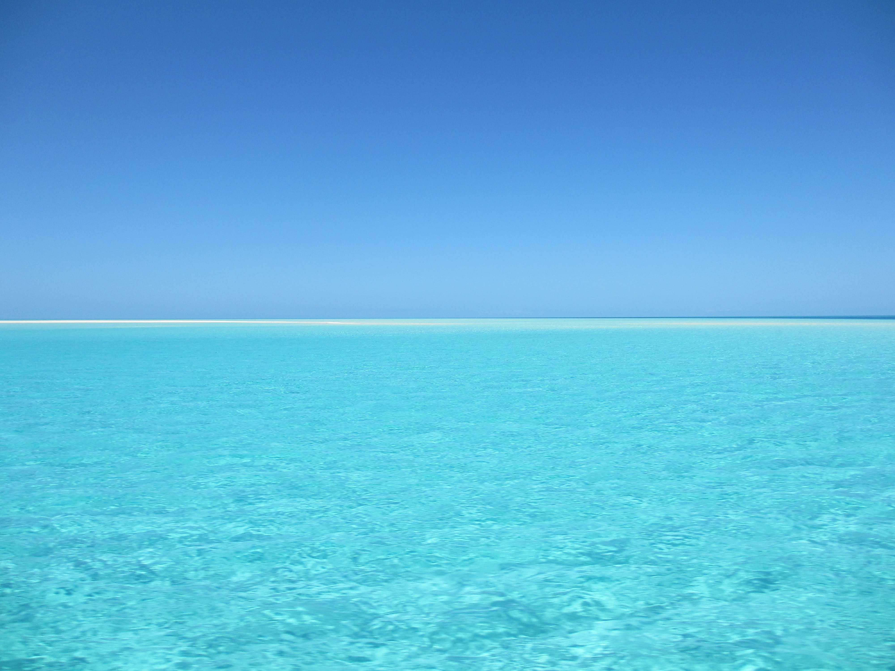
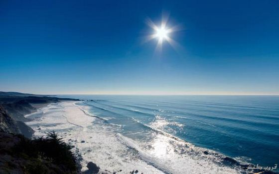

المحيطات:
هي الجزء الأكبر والأعظم من الغلاف المائي الذي يطوق الكرة الأرضية وكما هو معروف فإن المياه تحتل (71%) من مساحة سطح الكرة الأرضية تقريباً أي ما يعادل (361) مليون كم3. وهي تتألف من مجموع مساحات المحيطات والبحار والبحيرات بعمق يبلغ متوسطة (3800م). ويبلغ عدد المحيطات التي تطوق كوكب الأرض خمسة محيطات.
أنواع المحيطات:
- المحيط الهادي.
- المحيط الأطلسي.
- المحيط الهندي.
- المحيط المتجمد الشمالي.
- المحيط المتجمد الجنوبي.
المحيطات في العالم :
المحيط الهادي
أكبر المحيطات إذ تبلغ مساحته نصف مساحة الغلاف المائي وأكثر من ثلث مساحة سطح الكرة الأرضية وتبلغ مساحته حوالي (165,246) مليون كم2. وفي حال أضفنا إليه البحار الفرعية التابعة له كبحر اليابان وبحر الصين فستصبح مساحته حوالي (179,679) مليون كم2. يقع المحيط الهادي بين القارة الأميركية من جهة وقارتي آسيا وأوقيانا من جهة أخرى ويحتوي هذا المحيط على أعمق وحدة بحرية في العالم وهي وحدة ماريان (11,521م) بالقرب من جزر الفلبين. لكن معدل عمقه يبلغ حوالي (4,282م). ويتصل بالمحيط الأطلسي عبر مضيق ماجلان في أقصى جنوب أميركا الجنوبية وبقناة باناما في أميركا الوسطى.
المحيط الأطلسي
يقع بين قارتي أوروبا وأفريقيا من جهة والقارة الأميركية من جهة أخرى كما أنه يمتد من القطب الشمالي حتى الأنتراكتيك. وتبلغ مساحته (8,2441) مليون كم2 وترتفع إلى نحو (106,463) كم2 في حال أضيفت إليه البحار المتفرعة عنه كبحر المانش و بحر الشمال و بحر البلطيق و ينفتح على المحيط المتجمد الشمالي. وأعمق وحدة فيه هي وحدة بورتوريكو (9,219م) أما معدل عمقه فهو (3,868م).
المحيط الهندي
من المحيطات المحيط الهندي يقع بين قارة أوقيانيا من الشرق وقارة آسيا من الشمال وقارة أفريقيا من الغرب فهو لا يتصل بالمحيط المتجمد الشمالي وتبلغ مساحته حوالي (73,443) مليون كم2 وقد تصل إلى (74,917) مليون كم2 إذا أضفنا إليه بحر عمان و الخليج العربي و خليج البنغال و بعض البحار الفرعية الأخرى وأعمق وحدة فيه هي وحدة جاوة البالغ عمقها (7,455م). أما معدل عمقه فهو (3,963م). ويتصل بالمحيط الهادي عبر مضائق عديدة موجودة في شرقه أهمها مضيق باس في أستراليا.

المحيط المتجمد الشمالي
يشكل القطب الشمالي للكرة الأرضية ويحيط به على مساحة تبلغ حوالي 14 مليون كم2 تقريباً يغطيه الجليد بصورة دائمة وهو جليد دائم لا يرتكز على أية أرض يابسة فيه بعض الجزر التابعة لقارة أوروبا و أمريكا الشمالية و آسيا وفيه درجة الحرارة الأكثر انخفاضاً في العالم قد تصل الحرارة إلى 70 درجة تحت الصفر أعمق وحدة فيه بحدود 5440 و معدل عمقه 1526 م.
المحيط المتجمد الجنوبي
يتكون من الأجزاء الجنوبية للمحيط الأطلسي والمحيط الهادي والمحيط الهندي التي تحيط بقارة القطب الجنوبي وتقع مناطقه بعد خط عرض 45 جنوباً من كل محيط حيث تخف أو تنعدم كل التأثيرات المدارية وتتجمد مياهه معظم أيام السنة وأعمق وحدة فيه تصل إلى 6972 م.